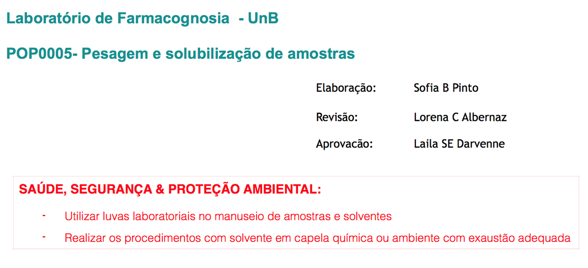

Biossegurança
Há 4 níveis de biossegurança, crescentes em grau de contenção e complexidade do nível de proteção, e normalmente estão de acordo com a classe de risco do agente biológico, embora exceções possam ocorrer.
Os níveis de biossegurança estipulam regras mínimas para as instalações, equipamentos de proteção e procedimentos que devem ser observados para manter a contenção do material biológico e proteção individual e da coletividade.
CLASSIFICAÇÃO DE RISCOS:
As classes de risco de material biológico são assim definidas:
Níveis de Biossegurança
- Classe de risco 1 (baixo risco individual e para a comunidade): inclui os agentes biológicos conhecidos por não causarem doenças no homem ou nos animais adultos sadios;
- Classe de risco 2 (moderado risco individual e limitado risco para a comunidade): inclui os agentes biológicos que provocam infecções no homem ou nos animais, cujo potencial de propagação na comunidade e de disseminação no meio ambiente é limitado;
- Classe de risco 3 (alto risco individual e moderado risco para a comunidade): inclui os agentes biológicos que possuem capacidade de transmissão por via respiratória e que causam patologias humanas ou animais, com tratamentos conhecidos;
- Classe de risco 4 (alto risco individual e para a comunidade): inclui os agentes biológicos com grande poder de transmissibilidade por via respiratória de transmissão e tratamento desconhecidas.
Os laboratórios da FM possuem nível de biossegurança 1 ou 2.
Identifique o nível de biossegurança de seu laboratório!
Nível de Biossegurança 1
- O acesso ao laboratório deve apresentar as áreas de circulação desobstruídas e livres de equipamentos e estoques de materiais;
- A sinalização contendo o símbolo internacional de risco biológico, advertência de área restrita, identificação e telefone de contato do Profissional Responsável, deve ser afixada na porta de acesso ao laboratório onde há o manuseio de material biológico.
- No laboratório, todos os procedimentos, sejam técnicos ou administrativos, devem estar descritos, serem de fácil acesso e do conhecimento das pessoas envolvidos em sua execução;
- As pessoas devem lavar as mãos antes e após a manipulação de agentes de risco, após a remoção das luvas e antes de saírem do laboratório;
- É proibido comer, beber, fumar, manusear lentes de contato e aplicar cosméticos (maquiagem, cremes, dentre outros) nas áreas de trabalho do laboratório;
- Recomenda-se a não utilização de cosméticos e adereços (brincos, pulseiras, relógio, dentre outros) no laboratório. As pessoas que usam lentes de contato em laboratórios deverão considerar usar também óculos de proteção ou protetores faciais;
- É proibido levar qualquer objeto à boca no laboratório, a pipetagem deverá ser realizada com dispositivos mecânicos, nunca com a boca.
- As superfícies de trabalho devem ser descontaminadas ao final de cada turno de trabalho e sempre que ocorrer derramamento de material biológico;
- Devem ser mantidas a limpeza e a organização do laboratório;
- É proibido manter alimentos, plantas e animais que não sejam objetos de análise do laboratório;
- Materiais e reagentes devem ser estocados em instalações apropriadas no laboratório;
- Deve haver sempre disponível kit de primeiros socorros.
- Todos os resíduos devem ser descartados segundo normas legais e técnicas vigentes e em cumprimento ao Plano de Gerenciamento de Resíduos da Instituição:
- Nos insetários, todo o material a ser descartado deve ser acondicionado em lixeiras. Os sacos do lixo devem ser recolhidos ao final do dia e descontaminados por 12h a -18ºC ou por autoclavagem. Após descontaminação podem ser descartados;
- No laboratório de Leishmania, todo o material a ser descartado deve ser acondicionado em saco de autoclave. Quando os sacos estiverem 2/3 cheios devem ser fechados e transportados em dupla contenção até a autoclave para descontaminação. Após descontaminação podem ser descartados;
- Nos laboratórios de fungos, todo o material a ser descartado deve ser acondicionado em saco de autoclave. Quando os sacos estiverem 2/3 cheios devem ser fechados e autoclavados para descontaminação. Após descontaminação podem ser descartados.
- No laboratório, os materiais perfurocortantes devem ser manuseados cuidadosamente e seguindo as normas instruídas;
- O descarte do material perfurocortante deve ser realizado em recipiente de paredes rígidas, resistentes à punctura, ruptura e vazamento, com tampa, devidamente identificado, segundo normas legais e técnicas vigentes, localizado próximo à área de trabalho, sendo expressamente proibido o esvaziamento desses recipientes para o seu reaproveitamento;
- No descarte, as agulhas usadas não devem ser dobradas, quebradas, reutilizadas, recapeadas, removidas das seringas ou manipuladas antes de serem desprezadas. Descartá-las nas caixas Descarpack;
- As vidrarias quebradas não devem ser manipuladas diretamente com a mão, devendo ser removidas por meios mecânicos, como vassoura, pá de lixo ou pinças e devem ser descartadas em recipientes adequados;
- É necessária a organização de um plano de contingência e emergência;
- Deve ser mantida uma rotina de controle de artrópodes e roedores.
- Equipamentos de proteção individual, tais como luvas, avental ou jaleco, são requeridos durante o trabalho e devem estar descritos em documentos de Procedimentos Operacionais Padrão (POPs);
- Exemplo de POP do Laboratório de Farmacognosia da UnB:

- O jaleco deverá ter mangas compridas ajustadas nos punhos e não deve ser usado fora da área laboratorial. A equipe do laboratório nunca deve levar jaleco para casa sem prévia descontaminação;
- Os EPIs devem ser retirados antes de sair do ambiente de trabalho, depositados em local exclusivo para esse fim e descontaminados antes de serem reutilizados ou descartados;
- Mãos enluvadas não devem tocar “superfícies limpas” tais como teclados, telefones, maçanetas, entre outros. Luvas devem ser usadas, segundo suas indicações e seu uso é restrito ao laboratório. Luvas descartáveis não poderão ser lavadas, nem reutilizadas;
- É obrigatório o uso de calçados fechados que possam proteger contra acidentes.
- O laboratório deve possuir dispositivos de emergência para lavagem dos olhos e presença de chuveiro de emergência próximo;
- As rotas de fuga e saídas de emergência devem estar identificadas;
- Deve haver espaço suficiente entre as bancadas, cabines e equipamentos de modo a permitir acesso fácil para a realização da limpeza;
- O mobiliário do laboratório deve evitar detalhes desnecessários, como reentrâncias, saliências, quebras, cantos, frisos e tipos de puxadores que dificultem a limpeza e a manutenção, e atender os critérios de ergonomia, conforme normas técnicas e legais vigentes;
- As cadeiras e móveis utilizados no trabalho laboratorial deverão ser capazes de suportar cargas e usos previstos e ser revestidos com material que não seja absorvente e que possa ser facilmente descontaminado.
Nível de Biossegurança 2
- As equipes do laboratório e de apoio devem receber treinamentos anuais apropriados sobre os riscos potenciais associados aos trabalhos desenvolvidos. Treinamentos adicionais serão necessários em caso de mudanças de normas ou de procedimentos;
- O trabalho em laboratório deve ser supervisionado por profissional de nível superior com conhecimento e experiência comprovada na área de Biossegurança;
- O Profissional Responsável deve implementar políticas e procedimentos com ampla informação a todos que trabalhem no laboratório sobre o potencial de risco relacionado ao trabalho;
- O acesso ao laboratório deve ser restrito a profissionais da área, mediante autorização do Profissional Responsável;
- Pessoas susceptíveis às infecções, tais como as imunocomprometidas ou imunodeprimidas, não devem ser permitidas no laboratório. Cabe ao Profissional Responsável a decisão final quanto à análise de cada circunstância e a determinação de quem deve entrar ou trabalhar no laboratório:
- Nos insetários de criação de Aedes aegypti é proibida a entrada de pessoas que apresentem, ou tenham apresentado nos últimos 10 dias, sintomas de dengue, Zika, Chikungunya ou Febre Amarela como demonstrado na Tabela 1 a seguir:
PROIBIDA A ENTRADA DE PESSOAS QUE APRESENTEM OS SEGUINTES SINTOMAS:
- Todo o pessoal deve ser orientado sobre os possíveis riscos e necessidade de seguir as especificações de cada rotina de trabalho, procedimentos de Biossegurança e práticas estabelecidas no Manual de Biossegurança do laboratório, acessível a todos os usuários;
- As portas do laboratório devem permanecer fechadas quando os ensaios estiverem sendo realizados e trancadas ao final das atividades. Nas áreas de acesso seguro de dupla contenção, as portas de saída e as portas dos laboratórios não poderão estar abertas ao mesmo tempo. Deve-se sempre manter uma porta fechada para manter a contenção;
- O pessoal do laboratório deve estar apropriadamente imunizado ou examinado quanto aos agentes manipulados ou potencialmente presentes no laboratório.

Atenção 1
Atenção 2